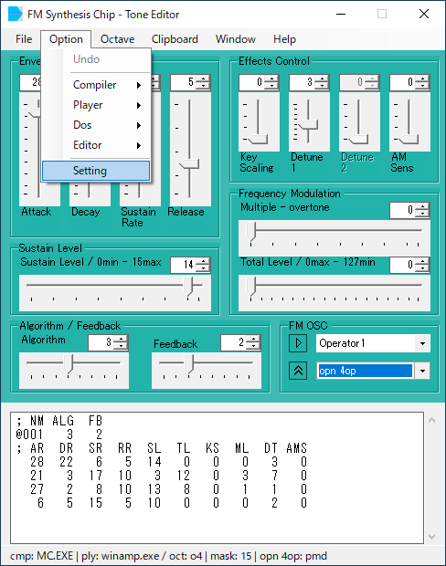
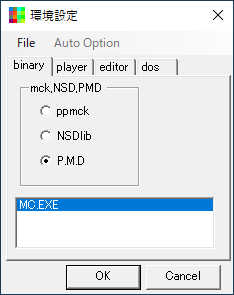
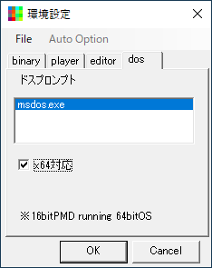
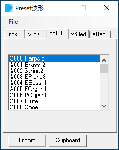
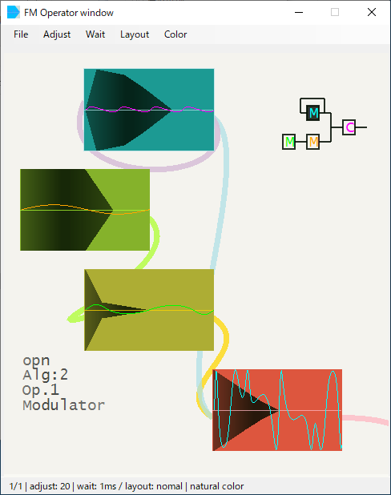
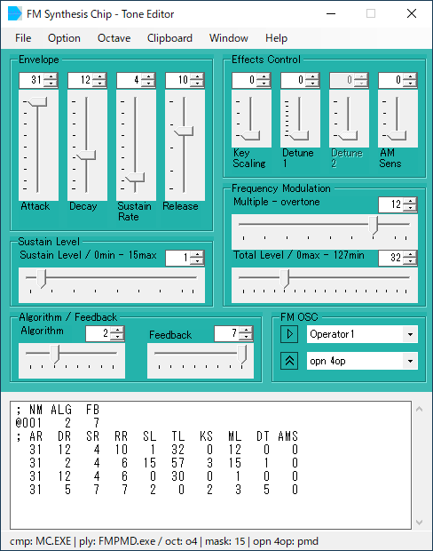

※ Preset音色の準備
|
|  |
fm_editor.exeを起動します。 本体パネルの"Option - Setting"を選択します。 |
|  |
環境設定パネルから、 "binaryタブ"をクリックし、 ラジオボタンで"PMD"を選択、 "MC.EXE"を"リストボックス"へ Drug&Dropで登録します。 同じく、"playerタブ"をクリックし、 同様に"FMPMD.exe"を登録します。 |
|  |
"dosタブ"をクリックし、 "msdos.exe"を登録します。 PMDは16bit appなので、"x64対応"にチェックを入れ、 環境設定を閉じます。 |
|  |
本体パネルのメニューにある、"File - Preset"を選択し、Preset波形ウィンドウを開きます。 "pc88タブ"を選択します。 "リストボックス"内の"@000"などをクリック、これで音が出れば、環境設定がうまくいってます。 続けて、"Import"ボタン"を押すと、本体にpresetデータが読み込まれます。 |
|  |
本体パネルのメニューにある、 "window - FM OP window"をクリック、 "Operator window"が開きます。 インポートしたエンベロープと波形が表示されます。 |
|  |
本体パネル、 Frequency Modulationの、 "Multiple - overtone"のスライダーを、 左右に動かして見て下さい。 "Operator window"の表示が、変化します。 "再生ボタン"(or スペースキー)を押して、 この音色を確認します。 以上が、基本的な使い方です。 |
| home> index> quick> FM Synthesis Chip - Tone Editor |
2021 04coreworks
|